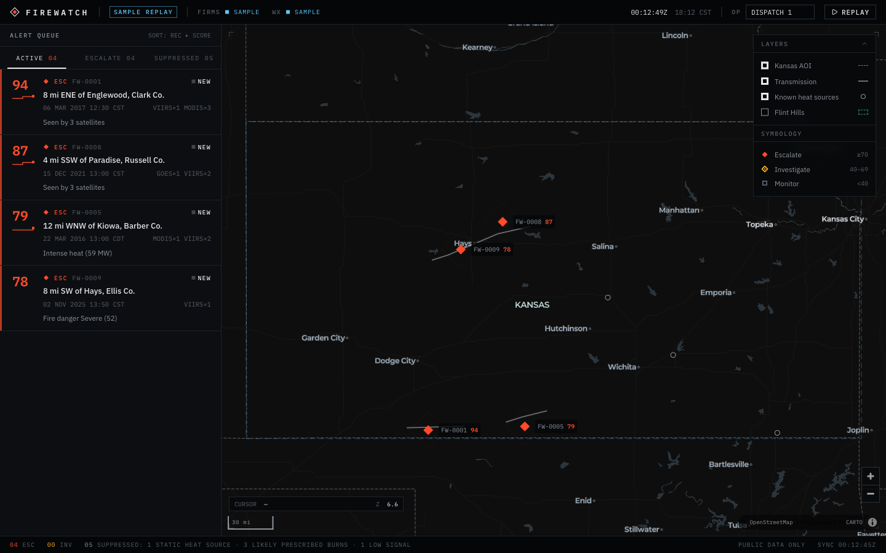

The dispatcher keeps the ranked queue and gains the reason, the data age and a page action.
Current build
Proposed


Stays: ranked queue, 0 to 100 score, reasons.
Changes: reasons name the burn log, each source shows its age, and a "Page the district" action is added.
Current build → proposed
Dispatcher view